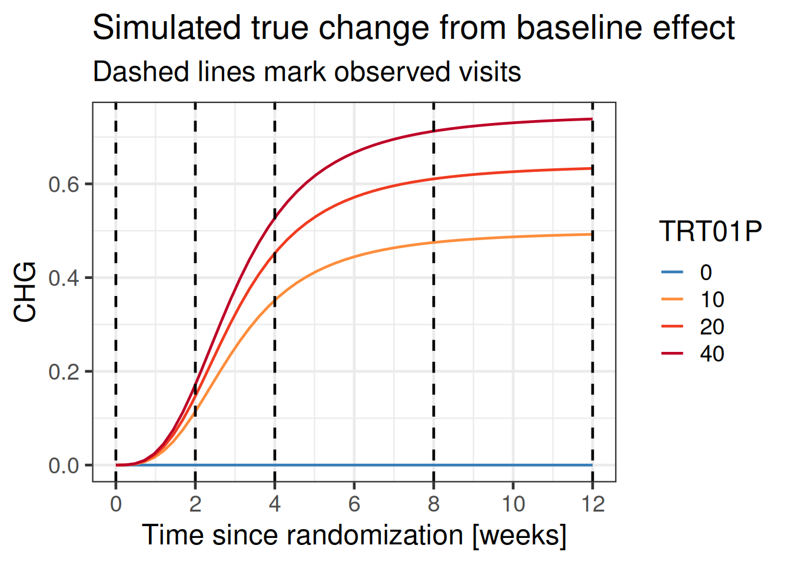
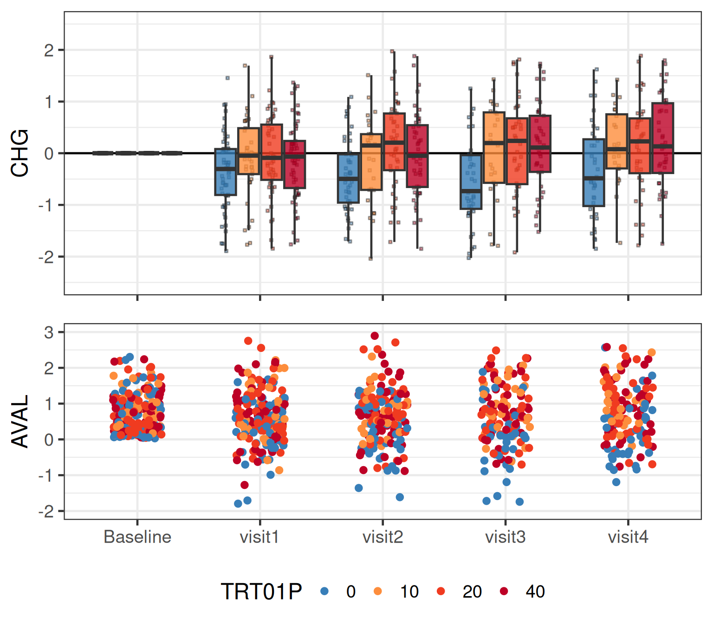
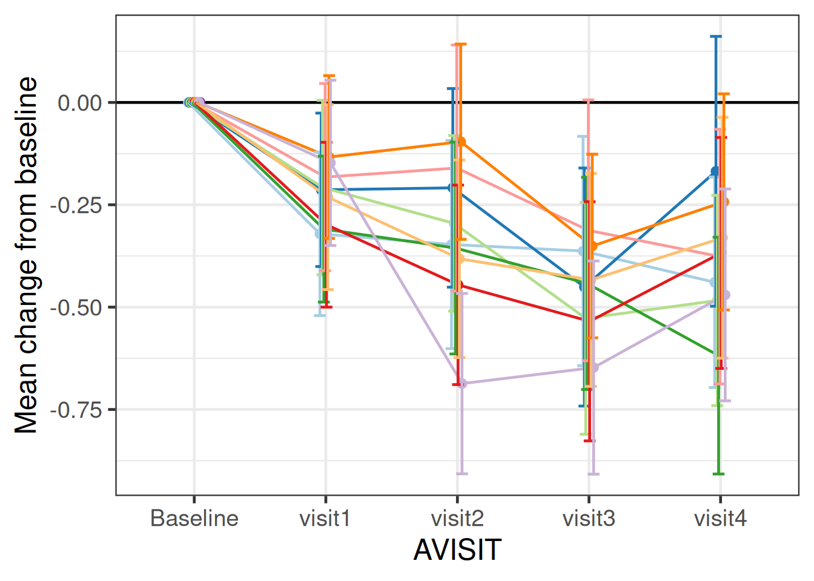
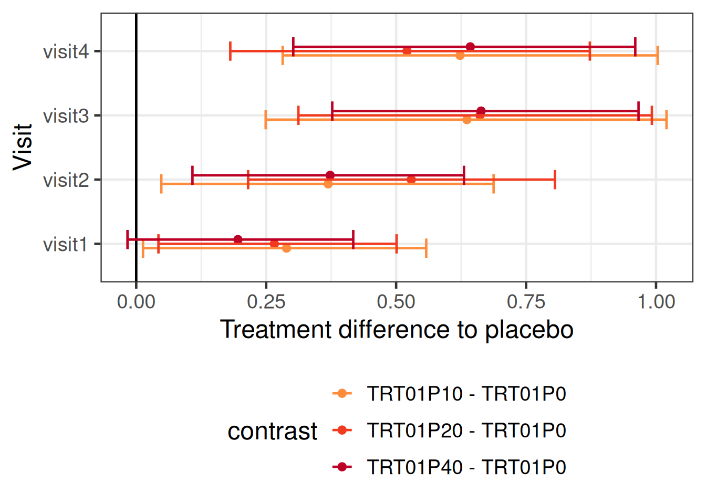
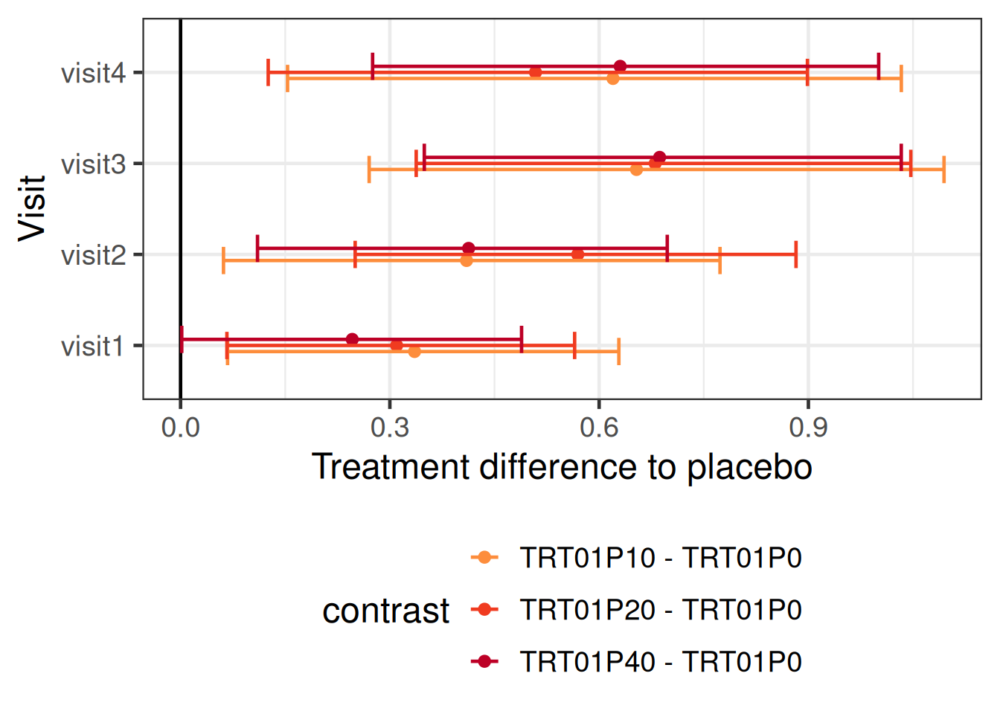
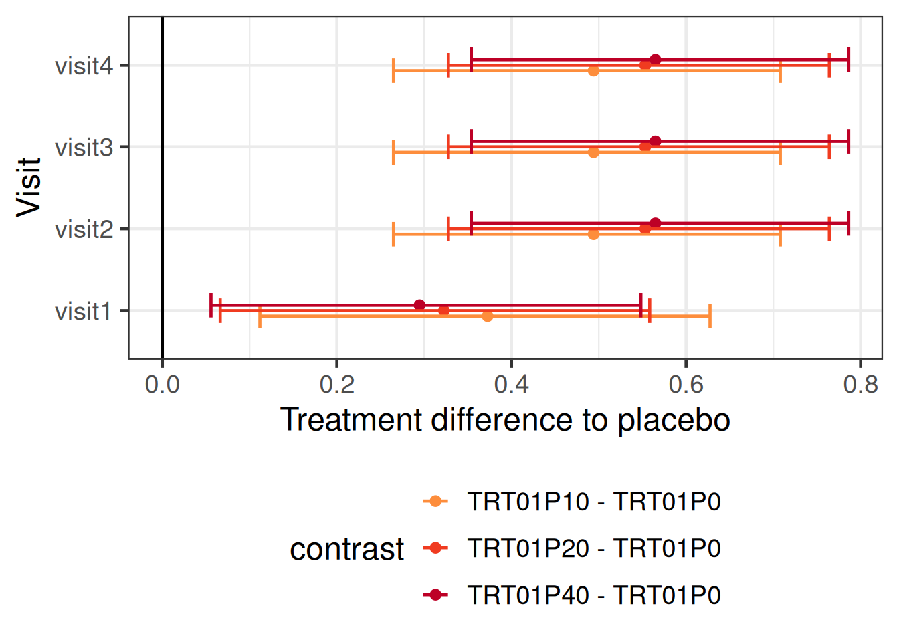
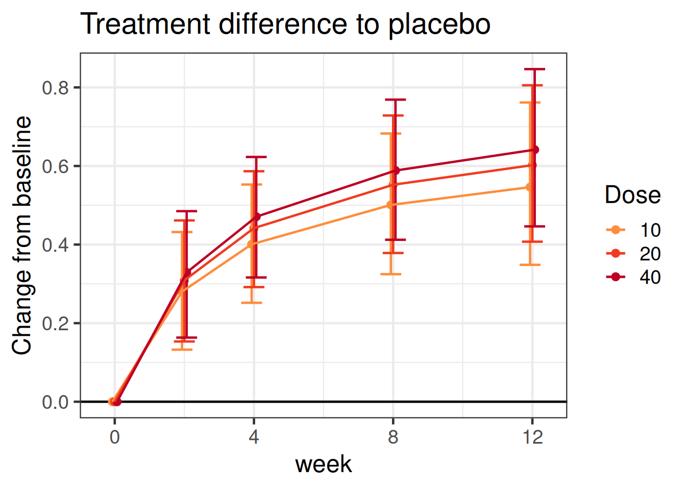
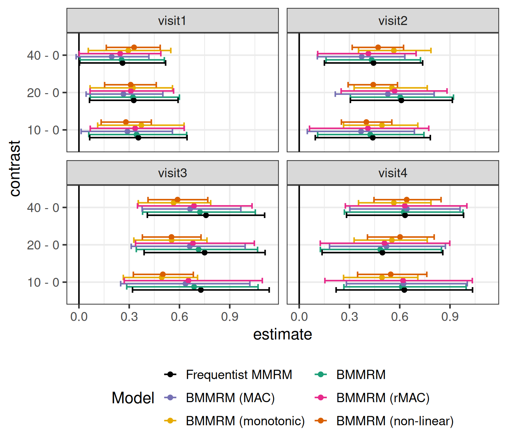

library(tidyverse)
library(brms)
library(posterior)
library(mvtnorm)
library(dqrng)
library(lme4)
library(patchwork)
library(mmrm)
library(emmeans)
library(gt)
here::i_am("src/02h_mmrm.qmd")
# instruct brms to use cmdstanr as backend and cache all Stan binaries
options(brms.backend="cmdstanr", cmdstanr_write_stan_file_dir=here::here("_brms-cache"))
# create cache directory if not yet available
dir.create(here::here("_brms-cache"), FALSE)
set.seed(4095867)
# default control argument passed to brms
control_args <- list(adapt_delta=0.95)
# allow wider printing
options(width=120)14 Bayesian Mixed effects Model for Repeated Measures
This case study covers
- Fitting mixed models for repeated measures using restricted maximum likelihood (REML) in R using the
mmrmpackage - Fitting Bayesian mixed models for repeated measures using
brmspackage - Distributional regression
sigma ~ 1 + AVISIT + TRT01P + AVISIT:TRT01Pto allow variances to vary across visits and treatment groups in a MMRM - Specifying an unstructured correlation structure for MMRMs using
autocor = ~unstr(time=AVISIT, gr=USUBJID) - Estimands addressed by MMRM models
- Using the
emmeanspackage to obtain least-squares means (LS-means), differences in LS-means and custom contrasts with highest posterior density credible intervals, as well as usinghypothesisas an alternative for complex situations - Options for MMRM paramterization including forward difference contrasts for changes between visits using
contrasts(simulated_data$AVISIT) <- MASS::contr.sdif - Meta-analytic combined approach to MMRMs for using historical data and attempts to make the approach more robust against prior-data-conflict
- Extending MMRMs using covariates with a monotonic effect using
mo()and non-linear terms
To run the R code of this section please ensure to load these libraries first:
14.1 Background
In randomized controlled clinical trials efficacy variables are often measured at multiple points of time. This may be at visits to the trial site for assessments that require a patient to be in the investigator’s office, but could also be at a patient’s home (e.g. for a daily quality of life questionnaire). Multiple assessments over time are useful for a wide variety of reasons. Firstly, we get information about how the difference between treatment groups develops over time. I.e. about both the onset of action, as well as whether treatment effects disappear or decline at some point (e.g. after the discontinuation of treatment either by some patients during the treatment period or by all patients during a planned post-treatment follow-up period). Secondly, seeing consistent data over time provides additional evidence for the presence of an effect of an intervention. Thirdly, pre-treatment (baseline) assessment(s) of a variable are often used as a covariate in analyses, because this tends to reduce unexplained variability leading to smaller standard errors. Finally, data from post-baseline visits can help us deal with missing data or data that are not relevant for our estimand of interest.
Sometimes, we would be primarily interested in the treatment difference at one particular visit (e.g. the final visit at the end of the planned treatment period) or we might want to combine (e.g. average) treatment effects across multiple visits.
14.2 Data
We will simulate data from a hypothetical parallel group RCT that tests three doses of a drug (10, 20 or 40 mg once daily) compared with a placebo (0 mg once daily). The endpoint of interest is continuous and assessed at a baseline visit, as well as at 4 post-baseline visits (week 2, 4, 8 and 12). 200 patients are randomly assigned to each treatment group (approximately 50 patients per arm).
We simulate data with the following covariance matrix:
# Correlation matrix between visits (baseline + 4 post-baseline visits)
corr_matrix <- diag(5)
rho <- c(0.6, 0.48, 0.4, 0.375)
corr_matrix[1,2:5] <- rho[1:4]
corr_matrix[2,3:5] <- rho[1:3]
corr_matrix[3,4:5] <- rho[1:2]
corr_matrix[4,5:5] <- rho[1:1]
corr_matrix[lower.tri(corr_matrix)] <- t(corr_matrix)[lower.tri(corr_matrix)]
# Standard deviations by visit (baseline + 4 post-baseline visits)
sds <- sqrt(c(0.75, 0.8, 0.85, 0.95, 1.1))
cov_matrix <- diag(sds) %*% corr_matrix %*% diag(sds)
print(cov_matrix, digits=3) [,1] [,2] [,3] [,4] [,5]
[1,] 0.750 0.465 0.383 0.338 0.341
[2,] 0.465 0.800 0.495 0.418 0.375
[3,] 0.383 0.495 0.850 0.539 0.464
[4,] 0.338 0.418 0.539 0.950 0.613
[5,] 0.341 0.375 0.464 0.613 1.100In our simulation some patients stop treatment before the end of the trial and actually drop out of the study. We no longer follow them, because we are interested in a hypothetical estimand as if they had stayed on drug, which means we are no longer interested in values after treatment discontinuation.
Show the code
# Simulate from multivariate normal for control group
# (before adding treatment effect later)
# We simulate 1000 patients and then apply inclusion criteria and keep the
# first 200 that meet them.
N <- 1000
Nf <- 200
if(use_small_N) {
Nf <- 50
}
effect_course <- function(dose, time, ed50=8, et50=3) {
0.9 * dose /(dose + ed50) * time^3 /(time^3 + et50^3)
}
zero <- setNames(rep(0, 5), c("BASE", paste0("visit", 1:4)))
simulated_data <- rmvnorm(n = N,
mean = zero,
sigma = cov_matrix) %>%
# turn into tibble
as_tibble() %>%
# Apply inclusion criteria and keep first Nf patients
filter(BASE>0) %>%
filter(row_number()<=Nf) %>%
# Assign subject ID, treatment group and create missing data
mutate(USUBJID = row_number(),
TRT01P = dqsample(x=c(0L, 10L, 20L, 40L), size=Nf, replace=T),
# Simulate dropouts
dropp2 = plogis(visit1-2),
dropp3 = plogis(visit2-2),
dropp4 = plogis(visit3-2),
dropv = case_when(runif(n=n())<dropp2 ~ 2L,
runif(n=n())<dropp3 ~ 3L,
runif(n=n())<dropp4 ~ 4L,
TRUE ~ 5L),
visit2 = ifelse(dropv<=2L, NA_real_, visit2),
visit3 = ifelse(dropv<=3L, NA_real_, visit3),
visit4 = ifelse(dropv<=3L, NA_real_, visit4)) %>%
dplyr::select(-dropp2, -dropp3, -dropp4, -dropv) %>%
# Turn data into long-format
pivot_longer(cols=starts_with("visit"), names_to = "AVISIT", values_to="AVAL") %>%
mutate(
# Assign visit days
ADY = case_when(AVISIT=="visit1" ~ 2L*7L,
AVISIT=="visit2" ~ 4L*7L,
AVISIT=="visit3" ~ 8L*7L,
AVISIT=="visit4" ~ 12L*7L),
# Turn to factor with defined order of visits
AVISIT = factor(AVISIT, paste0("visit", 1:4)),
# Assume rising treatment effect over time (half there by week 3) with an
# Emax dose response (ED50 = 5 mg)
AVAL = AVAL + effect_course(TRT01P, ADY/7),
# Change from baseline = value - baseline
CHG = AVAL - BASE,
TRT01P=factor(TRT01P)) %>%
relocate(USUBJID, TRT01P, AVISIT, ADY, AVAL, CHG, BASE) %>%
# Discard missing data
filter(!is.na(AVAL))The first 10 rows of the simulated data set are:
| USUBJID | TRT01P | AVISIT | ADY | AVAL | CHG | BASE | |
|---|---|---|---|---|---|---|---|
| 1 | 1 | 0 | visit1 | 14 | 0.689 | 0.610 | 0.079 |
| 2 | 1 | 0 | visit2 | 28 | −0.143 | −0.222 | 0.079 |
| 3 | 1 | 0 | visit3 | 56 | 0.092 | 0.013 | 0.079 |
| 4 | 1 | 0 | visit4 | 84 | −1.498 | −1.577 | 0.079 |
| 5 | 2 | 20 | visit1 | 14 | 0.192 | −0.042 | 0.235 |
| 6 | 2 | 20 | visit2 | 28 | 0.549 | 0.314 | 0.235 |
| 7 | 3 | 10 | visit1 | 14 | 0.876 | −0.068 | 0.944 |
| 8 | 3 | 10 | visit2 | 28 | 0.266 | −0.678 | 0.944 |
| 9 | 3 | 10 | visit3 | 56 | 1.155 | 0.211 | 0.944 |
| 10 | 3 | 10 | visit4 | 84 | 3.059 | 2.115 | 0.944 |
| 11..641 | |||||||
| 642 | 200 | 40 | visit4 | 84 | 0.660 | −0.206 | 0.866 |
The assumed true change from baseline relationship in this simulation is:

The entire simulated data set with simulated residual noise in a graphical representation looks like:

14.3 Model description
14.3.1 The Mixed Model for Repeated Measures (MMRM)
The Mixed Model for Repeated Measures (MMRM) is a very popular model for continuous endpoints assessed at multiple visits (or their change from a pre-treatment baseline value). Part of its popularity stems from the fact that it is a flexible model for an outcome measured at different visits that accounts for within patient correlation and can handle missing data without imputation (if you are interested in the right estimand). In particular, it was a major milestone for treating missing data and drop-outs more appropriately than via last-observation-carried-forward (LOCF), which lead to it being recommended by some as a default analysis approach for a hypothetical estimand. Another contributing factor to MMRM’s success in the pharmaceutical industry is that it can be fit using restricted maximum likelihood (REML) with standard software.
A widely used default analysis is to have the following (fixed effects) model terms
visit as a factor,
treatment as a factor,
treatment by visit interaction,
baseline (pre-treatment) value of the continuous endpoint as a continuous covariate, and
visit by baseline value interaction.
These terms allow for a flexible time course in the control group, as well as different treatment effects at different visits on top of that. Additionally, adjustment for baseline values usually reduces standard errors in clinical trials. By allowing for a visit by baseline interaction we allow the relationship between the values at each visit and the baseline to differ. This reflects that the longer ago a baseline value was measured, the less it will typically be correlated with future measurements.
Where a MMRM differs from a linear model is that the residuals from different visits of the same patient are assumed to be correlated. We do not usually wish to restrict this correlation structure to be of a particular form (such as first-order autoregressive AR(1)), but to allow it to be of an “unstructured” form. This is preferable over simpler structures like first-order autoregressive AR(1), for example. For example, AR(1) assumes a constant correlation between any adjacent visits while raising this correlation to a power for more distant observations. This simple correlation structure may inappropriately model these distant observations for a single patient as almost fully independent resulting in inappropriately small standard errors.
14.3.2 Formal specification of MMRM
Formally, let us assume that there are \(V\) visits. We usually assume that the \(V\)-dimensional response \(\boldsymbol{Y}_i\) for patient \(i\) satisfies \[\boldsymbol{Y}_i = \boldsymbol{X}_i \boldsymbol{\beta} + \boldsymbol{Z}_i \boldsymbol{b}_i + \boldsymbol{\epsilon}_i,\] where \(\boldsymbol{\beta}\) is a vector of regression coefficients for fixed effects, the \(\boldsymbol{b}_i \sim \text{MVN}(\boldsymbol{0}, \boldsymbol{D})\) are random effects with the vector \(\boldsymbol{Z}_i\) indicating which one applies for which component (each corresponding to a visit) of the response, and the \(\boldsymbol{\epsilon}_i \sim \text{MVN}(\boldsymbol{0}, \boldsymbol{\Sigma})\) are residual errors. Then, \[\boldsymbol{Y}_i \sim \text{MVN}(\boldsymbol{X}_i \boldsymbol{\beta}, \boldsymbol{V}_i),\] where \[\boldsymbol{V}_i = \boldsymbol{Z}_i \boldsymbol{D} \boldsymbol{Z}_i^T + \boldsymbol{\Sigma}.\]
With the goal to avoid unnnecessary assumptions, the marginal covariance matrix \(\boldsymbol{V}_i\) is usually kept “unstructured”. I.e. we usually want to avoid imposing any particular structure on the covariance matrix. However, an unstructured covariance matrix requires to inform potentially many parameters which grow exponentially fast in the number of visits \(V\). Modeling the covariance matrix as a structured correlation matrix and by visit residual error standard deviations may facilitate stabilizing fitting procedures.
14.3.3 What estimand does MMRM address?
MMRM can address a hypothetical estimand about a continuous variable at one or more visits “as if all patients had remained on treatment to the end of the planned treatment period”. This is done by applying MMRM to on-treatment data only and making the assumption that stopping treatment or leaving the study occurs at random conditional on the preceding observations and the covariates being included in the model (“missing at random” or MAR).
One key attractive feature is that MMRM estimates this estimand without us needing to directly impute any data. I.e. there is no need for multiple imputation and fitting the model to each imputation, instead we only need to fit MMRM to the on-treatment data under analysis once. However, note that if there are no post-baseline observations for a patient the model will exclude the patient from the analysis, which is a valid thing to do under the MAR assumption.
Nevertheless, it produces identical results as if we had created a large number of multiple imputations, ran the model and then combined the results.
If we wish to target different estimands or make different assumptions than implied by the MMRM, we would need to impute prior to fitting a MMRM. If we perform multiple imputation, fitting a MMRM becomes unnecessary, because when all patients have (non-missing) data at all visits that should enter the analysis (i.e. is directly assessing our estimand of interest), then fitting a MMRM (with both treatment group and all baseline covariates have an interaction with visit) is equivalent to separately fitting a linear regression model for each visit.
14.3.4 Is MMRM only good for one variable across visits?
There is nothing that requires the separate observations being modeled by a MMRM to be measurements of the same variable across time. You can just as appropriately apply MMRM to multiple outcomes measured at the same time, or across multiple occasions. This can be helpful when missingness or data becoming irrelevant to the estimand of interest depends on multiple variables.
An example would be a diabetes study, where both fasting plasma glucose (FPG) and glycated hemoglobin (HbA1c) are measured at each visit, and rescue medication is initiated when either of the two is above some threshold. In order to estimate the hypothetical estimand for the HbA1c difference “as if no rescue medication had been taken”, you can jointly model FPG and HbA1c.
14.3.5 Should we use the baseline measurement as a covariate or an extra observation?
For some patients all post-baseline assessments will be missing, additionally some patients may not have a baseline assessment. In this situation (unless we somehow impute these data), the MMRM model we described cannot include such a patient in the analysis.
One potential idea for dealing with this situation is to use the baseline assessment not as a covariate, but as an extra observation. I.e. there is an additional baseline record for each patient, but the baseline term, as well as the baseline by visit interaction terms are removed from the model.
This is a reasonable approach, if the residuals across visits are jointly multivariate normal, which we are already assuming for the post-baseline visits. However, this can be a problematic assumption to make when inclusion criteria are applied at baseline that lead to the residuals for the baseline assessment not following a normal distribution. Such an inclusion criterion could be on the variable under analysis itself, or it could be on a variable that is sufficiently strongly correlated with the analysis variable to deform its distribution.
14.3.6 How is MMRM different from a mixed effects model with a random subject effect on the intercept?
A mixed (random) effects model with a random subject effect on the intercept effectively assumes that the residuals for all visits are equally strongly correlated (“compound symmetric covariance structure”, see next subsection) and also that the standard deviation is the same across visits (although brms would let us avoid this by using distributional regression as discussed later).
14.3.7 What covariance structure to use?
There are several options for the covariance structures we can use
- The standard deviation will usually go up over time in RCTs. This occurs in part because the trial population was originally forced to be somewhat homogenous at baseline by the trial inclusion criteria. The further we move away from that point in time the more heterogenous outcomes will become across patients. Thus, we at least want to allow the variability to differ between visits.
- Data from visits that are closer in time to each other tend to be more highly correlated. Thus, a compound symmetric covariance structure that makes all visits equally correlated will not be realistic, but may sometimes be a reasonable approximation.
- The correlation between visits of a patient usually never drops to zero even if visits are months or years apart. Generally, assuming a correlation structure that substantially underestimates the correlation between some visits potentially does the most harm. In particular, an AR(1) correlation structure should in practice be avoided as it leads to exponentially fast diminishing correlations between visits.
- It is most common to use MMRM with a completely unstructured covariance structure across visits and we often even allow it to differ by treatment group. This avoids making (potentially unnecessary) assumptions. It also ensures the equivalence between MMRM and a by-visit-analysis in the absence of missing data.
As an illustration of what covariance matrices look like in practice, here is the estimated covariance structure reported by Holzhauer et al. 2015 for the fasting plasma glucose (FPG) values from one treatment group of a diabetes trial.
| Example of a covariance matrix for fasting plasma glucose in diabetic patients | ||||||||
| Visit | Week 0 | Week 4 | Week 12 | Week 16 | Week 24 | Week 32 | Week 40 | Week 52 |
|---|---|---|---|---|---|---|---|---|
| Week 0 | 7.68 | NA | NA | NA | NA | NA | NA | NA |
| Week 4 | 4.00 | 6.60 | NA | NA | NA | NA | NA | NA |
| Week 12 | 3.55 | 4.51 | 6.52 | NA | NA | NA | NA | NA |
| Week 16 | 3.03 | 3.83 | 5.02 | 6.90 | NA | NA | NA | NA |
| Week 24 | 3.32 | 4.00 | 4.29 | 4.42 | 6.20 | NA | NA | NA |
| Week 32 | 3.06 | 3.22 | 3.72 | 4.23 | 4.45 | 5.73 | NA | NA |
| Week 40 | 3.60 | 3.74 | 4.66 | 5.10 | 4.80 | 5.30 | 7.80 | NA |
| Week 52 | 3.60 | 3.44 | 4.48 | 4.53 | 4.67 | 5.16 | 6.26 | 8.51 |
In terms of longer term data, Holzhauer 2014 reported that in a RCT in pre-diabetic patients the correlation matrix for FPG could be well described by the numbers in the table below and that “during the first 3 years of the study, the variance appeared to be relatively constant around 0.68, but there was some indication of an increasing variability in years 3–6.” Unlike the numbers in diabetic patients, these numbers come from a model adjusting for the baseline FPG assessment.
To look at another endpoint, let us look at the covariance matrix for glycated hemoglobin A1c (HbA1c) trial in diabetes patients used in Holzhauer et al. 2015. Many patterns seem similar to FPG, but the correlation of adjacent visits is higher, which makes sense, because HbA1c is less subject to day-to-day variations than FPG.
14.4 Implementation
14.4.1 Reference implementations using SAS and lme4
Within a frequentist framework, this model is usually estimated using Restricted Maximum Likelihood Estimation (REML). One popular way of fitting such a model is using SAS code similar to the following
PROC MIXED DATA=simulated_data;
CLASS TRT01P AVISIT USUBJID;
MODEL CHG ~ TRT01P AVISIT BASE TRT01P*AVISIT AVISIT*BASE
/ SOLUTION DDFM=KR ALPHA = 0.05;
REPEATED AVISIT / TYPE=UN SUBJECT = USUBJID R Rcorr GROUP=TRT01P;
LSMEANS TRT01P*AVISIT / DIFFS PDIFF CL OM E;
RUN;Note that GROUP=TRT01P in the REPEATED statement specifies different covariance structures for each treatment groups. Importantly, DDFM=KR refers to using the method of Kenward and Roger for figuring out what degrees of freedom to use for inference with Student-t-distributions (or in other words to figure out how many independent observations the correlated observations across all our subjects are worth).
Additionally the OM option to the LSMEANS statement requests the by-treatment-group least squares means for each visit to be calculated for predicted population margins for the observed covariate distribution in the analysis dataset. On this occasion, it does not make a difference, because there are no categorical covariates in the model.
In R we can obtain a very similar frequentist fit for this model using the lme4 package using the following R code as explained in a R/PHARMA presentation on implementing MMRM in R by Daniel Sabanés Bové.
lmer(data=simulated_data,
CHG ~ TRT01P + AVISIT + BASE + AVISIT*TRT01P + AVISIT*BASE + (0 + AVISIT | USUBJID),
control = lmerControl(check.nobs.vs.nRE = "ignore", optimizer="nlminbwrap")) %>%
summary()Linear mixed model fit by REML ['lmerMod']
Formula: CHG ~ TRT01P + AVISIT + BASE + AVISIT * TRT01P + AVISIT * BASE + (0 + AVISIT | USUBJID)
Data: simulated_data
Control: lmerControl(check.nobs.vs.nRE = "ignore", optimizer = "nlminbwrap")
REML criterion at convergence: 1394.4
Scaled residuals:
Min 1Q Median 3Q Max
-2.20549 -0.48536 0.03077 0.48469 2.37565
Random effects:
Groups Name Variance Std.Dev. Corr
USUBJID AVISITvisit1 0.2634 0.5132
AVISITvisit2 0.3142 0.5606 0.82
AVISITvisit3 0.3976 0.6305 0.36 0.53
AVISITvisit4 0.4002 0.6326 0.14 0.27 0.56
Residual 0.2184 0.4673
Number of obs: 642, groups: USUBJID, 200
Fixed effects:
Estimate Std. Error t value
(Intercept) 0.13675 0.11511 1.188
TRT01P10 0.09631 0.14003 0.688
TRT01P20 0.20867 0.14131 1.477
TRT01P40 0.16115 0.14188 1.136
AVISITvisit2 -0.07965 0.12963 -0.614
AVISITvisit3 -0.03557 0.17137 -0.208
AVISITvisit4 -0.13510 0.18357 -0.736
BASE -0.53841 0.09128 -5.898
TRT01P10:AVISITvisit2 0.15369 0.15873 0.968
TRT01P20:AVISITvisit2 0.23196 0.16166 1.435
TRT01P40:AVISITvisit2 0.11442 0.16102 0.711
TRT01P10:AVISITvisit3 -0.03012 0.20938 -0.144
TRT01P20:AVISITvisit3 0.40380 0.21512 1.877
TRT01P40:AVISITvisit3 0.37877 0.21152 1.791
TRT01P10:AVISITvisit4 0.39443 0.22420 1.759
TRT01P20:AVISITvisit4 0.73213 0.23009 3.182
TRT01P40:AVISITvisit4 0.62368 0.22651 2.753
AVISITvisit2:BASE 0.01605 0.10836 0.148
AVISITvisit3:BASE -0.07395 0.14552 -0.508
AVISITvisit4:BASE -0.18146 0.15517 -1.169
Correlation matrix not shown by default, as p = 20 > 12.
Use print(x, correlation=TRUE) or
vcov(x) if you need itNote that the choice of the particular optimizer via control = lmerControl(optimizer="nlminbwrap") was chosen based on trying different ones to resolve convergence warnings. Moreover, problems were found out later with the lme4 package, which does not allow the fitting of MMRM with many visits, as it can easily lead to very long computation times and low convergence rates. Hence, prototyping of the dedicated mmrm R package was initiated originall by Daniel Sabanés Bové. The package was then quickly adopted as the first open source project of the openstatsware group. The mmrm package is a completely new implementation of the MMRM, and implements the log-likelihood function in C++ with the help of the TMB package, which enables to use gradient information through the use of automatic differentiation. It is similar with regards to the architecture to the glmmTMB package, but it provides the important Satterthwaite and Kenward-Roger degrees of freedom methods. More details are available e.g. in the R/Pharma workshop by Daniel and Doug Kelkhoff.
For this reason the mmrm package is preferable and its usage is demonstrated below:
mmrm_fit <- mmrm(
formula = CHG ~ TRT01P + AVISIT + BASE + AVISIT:TRT01P + AVISIT:BASE + us(AVISIT | USUBJID),
data = simulated_data %>%
mutate(USUBJID=factor(USUBJID)))
# reml=TRUE default option used (not specifically requested)
# e.g. cs(AVISIT | USUBJID) would request compound-symmetric covariance
# structure instead of unstructed ("us")
# us(AVISIT | TRT01P / USUBJID) would request separate covariance matrices
# for each treatment gorupWhile we can of course summarize the model fit and regression coefficients via summary(mmrm_fit), this is often not the main output we are interested in. Instead, we often want for each visit the treatment differences or least-squares means by treatment group. For a MMRM this involves linear combinations of regression coefficients, potentially weighted according to the distribution of (categorical baseline covariates). One very convenient way of obtaining these inferences is with the emmeans R package, which we can use with many different types of models including brms models. To obtain LS-means by visit for each treatment group, we use the emmeans function:
emm1 <- emmeans(mmrm_fit, ~ TRT01P | AVISIT,
lmer.df="kenward-roger", weights = "proportional")
print(emm1)AVISIT = visit1:
TRT01P emmean SE df lower.CL upper.CL
0 -0.2573 0.1010 195 -0.455923 -0.0587
10 -0.1610 0.0972 195 -0.352718 0.0307
20 -0.0486 0.0984 195 -0.242743 0.1455
40 -0.0962 0.0984 195 -0.290204 0.0979
AVISIT = visit2:
TRT01P emmean SE df lower.CL upper.CL
0 -0.3252 0.1110 164 -0.543898 -0.1065
10 -0.0752 0.1120 168 -0.295442 0.1450
20 0.1154 0.1150 170 -0.112308 0.3431
40 -0.0497 0.1130 169 -0.273528 0.1742
AVISIT = visit3:
TRT01P emmean SE df lower.CL upper.CL
0 -0.3470 0.1310 140 -0.605538 -0.0885
10 -0.2808 0.1290 140 -0.536845 -0.0248
20 0.2655 0.1370 140 -0.005206 0.5361
40 0.1929 0.1300 139 -0.063854 0.4497
AVISIT = visit4:
TRT01P emmean SE df lower.CL upper.CL
0 -0.5252 0.1320 136 -0.786681 -0.2638
10 -0.0345 0.1310 136 -0.293315 0.2243
20 0.4156 0.1390 136 0.141387 0.6898
40 0.2596 0.1310 136 0.000285 0.5189
Confidence level used: 0.95 To get the implied contrasts for each dose compared with the control we use the contrast function`:
contrasts1 <- contrast(emm1, adjust="none", method="trt.vs.ctrl", ref=1)
print(contrasts1)AVISIT = visit1:
contrast estimate SE df t.ratio p.value
TRT01P10 - TRT01P0 0.0963 0.140 195 0.688 0.4924
TRT01P20 - TRT01P0 0.2087 0.141 195 1.477 0.1414
TRT01P40 - TRT01P0 0.1612 0.142 195 1.136 0.2574
AVISIT = visit2:
contrast estimate SE df t.ratio p.value
TRT01P10 - TRT01P0 0.2500 0.157 166 1.590 0.1137
TRT01P20 - TRT01P0 0.4406 0.160 167 2.751 0.0066
TRT01P40 - TRT01P0 0.2756 0.159 166 1.728 0.0859
AVISIT = visit3:
contrast estimate SE df t.ratio p.value
TRT01P10 - TRT01P0 0.0662 0.184 140 0.361 0.7189
TRT01P20 - TRT01P0 0.6125 0.190 140 3.231 0.0015
TRT01P40 - TRT01P0 0.5399 0.185 140 2.914 0.0042
AVISIT = visit4:
contrast estimate SE df t.ratio p.value
TRT01P10 - TRT01P0 0.4907 0.186 136 2.645 0.0091
TRT01P20 - TRT01P0 0.9408 0.192 136 4.904 <.0001
TRT01P40 - TRT01P0 0.7848 0.187 136 4.193 <.0001The pairwise comparisons showing nominal p-values only (due to adjust="none"), but we could request e.g. adjust="bonferroni" instead. When we specified method="trt.vs.ctrl", we told the contrast function to use the first group as the control group by specifying its index via ref=1. Alternatively, we could have asked for all possible pairwise contrasts via contrast(..., method="pairwise") (or pairs(...)).
Sometimes, we may want to average the treatment effects across weeks 8 and 12. E.g. if we are very sure that (almost) the full treatment effect will have set in by week 8. When doing so, it is useful to fit a model that estimates separate treatment effects for both visits and then to average them. In contrast to averaging outcomes across visits for individual patients first, this approach more coherently deals with missing data, intercurrent events and differing effects of covariates. emmeans also allows us to do that, we just need to specify our contrasts slightly more manually. Note that in this case we need to know the ordering of estimates in the output of the emmeans() function in order to specify the contrasts:
emm1a <- emmeans(mmrm_fit, ~ TRT01P:AVISIT, weights="proportional")
contrast(emm1a,
method=list("40 vs Placebo" = c(0,0,0,0, 0,0,0,0, -0.5,0,0,0.5, -0.5,0,0,0.5),
"20 vs Placebo" = c(0,0,0,0, 0,0,0,0, -0.5,0,0.5,0, -0.5,0,0.5,0),
"10 vs Placebo" = c(0,0,0,0, 0,0,0,0, -0.5,0.5,0,0, -0.5,0.5,0,0)),
adjust="none") contrast estimate SE df t.ratio p.value
40 vs Placebo 0.662 0.153 139 4.322 <.0001
20 vs Placebo 0.777 0.157 139 4.950 <.0001
10 vs Placebo 0.278 0.152 139 1.834 0.0688With the release of brms 2.19.0 in March 2023 it became possible to fit equivalent models easily based on a Bayesian implementation of a MMRM with an unstructured covariance matrix as shown below.
14.4.2 brms implementation
The code below shows how we specify a MMRM model in a very similar way to SAS and the lme4 approach.
# Setup forward difference contrasts for changes between visits
contrasts(simulated_data$AVISIT) <- MASS::contr.sdif
mmrm_model1 <- bf(CHG ~ 1 + AVISIT + BASE + BASE:AVISIT + TRT01P + TRT01P:AVISIT,
autocor = ~unstr(time=AVISIT, gr=USUBJID),
sigma ~ 1 + AVISIT + TRT01P + AVISIT:TRT01P)
# If we manually specify priors by providing out own Stan code via the stanvars
# option, we may want to use `center=FALSE` in `bf()`, otherwise not.
# Explicitly specifying quite weak priors (given the variability in the data).
# These priors are set considering that unity is assumed to be the
# sampling standard deviation and that the outcome data is scaled such that
# unity is a considerable change.
mmrm_prior1 <- prior(normal(0, 2), class=Intercept) +
prior(normal(0, 1), class=b) +
prior(normal(0, log(10.0)/1.64), class=Intercept, dpar=sigma) + # 90% CrI spans 1/10 - 10
prior(normal(0, log(2.0)/1.64), class=b, dpar=sigma) + # 90% CrI spans 1/2 - 2x
prior(lkj_corr_cholesky(1), class="Lcortime")
brmfit1 <- brm(
formula=mmrm_model1,
prior= mmrm_prior1,
data = simulated_data,
seed=234235,
control = control_args,
refresh = 0
)
brmfit1Note that instead of writing (0 + AVISIT | USUBJID) like in the lme4 code, the brms syntax resembles the mmrm package syntax. We specify an unstructured correlation structure over time for groups of observations (here with the same unique patient identifier USUBJID) using autocor=~unstr(time=AVISIT, gr=USUBJID).
Note that using (0 + AVISIT | USUBJID) as in the lme4 turns out to not work well with brms. While conceptually this implies the correct correlation structure via an unstructured random effect, the model becomes overparametrized due to the residual error and random effect standard deviations becoming non-identifiable. Trying to avoid this e.g. by setting the uncorrelated residual standard deviation to a fixed value that is small relative to the total variability (e.g. prior(constant(0.1), sigma)) still results in very poor sampling of the posterior distribution (high Rhat values and very low effective sample size for the MCMC samples). The approach implemented by the unstr syntax uses instead a marginal approach avoiding the non-identifability of the conditional approach.
The model formula above specifies that the correlation structure is the same across all treatment groups. This is not an assumption we have to make and SAS provides the GROUP=TRT01P option in the REPEATED statement to avoid it. Similarly, the mmrm package allows the user to specify group specific covariance parameter estimates using the us(AVISIT | TRT01P / USUBJID) syntax (so “group / subject” on the right hand side, see here for details). On the other hand, the brms and lme4 packages do not have an option for allowing separate unstructed covariance matrices for the different treatment groups. However, brms offers more flexibility than the other two packages regarding the variation at different visits and treatment groups through “distributional regression” (i.e. we can specify a regression model for parameters of the distribution other than the location, in this case sigma).
If we just wanted a compound symmetric correlation matrix, we would just use (1 | USUBJID), because a simple random effect on the intercept induces an equal correlation between all visits.
By writing sigma ~ 1 + AVISIT + TRT01P + AVISIT:TRT01P we specify that we want heterogeneous standard deviations over time that may differ by treatment group (note that brms models the standard deviation rather than the variance), which we would typically assume. If we instead wanted to assume the same variance at each visit, we would simply omit this option. Note that while we did not specify it explicitly, we are using a \(\log\)-link function for sigma so that a regression coefficient of \(0.69\) approximately corresponds to a doubling of the standard deviation. The user can explicitly define the link using the family argument of bf and set family=gaussian(link_sigma="log") (or use other links if desired). Thus, if we wanted to set prior distributions for the treatment and the visit-by-treatment interaction terms, even a normal(0, 1) prior already allows for considerable a-priori variation in sigma between treatment groups and visits. A useful way for specifying a prior on a log scale is by defining the standard deviation of a normal distribution to be equal to \(\log(s)/\Phi^{-1}(1/2+c/2)\), which implies that the central credible interval \(c\) spans the range \(1/s - s\), i.e. \(\log(2)/1.64\) corresponds to the central 90% credible interval ranging from 1/2x to 2x around the mean.
As for the mmrm package, we can also easily obtain the equivalent of least-squares means with highest-posterior density (HPD) credible intervals for each treatment group by visit using emmeans.
emm2 <- emmeans(brmfit1, ~ TRT01P | AVISIT, weights="proportional")
emm2AVISIT = visit1:
TRT01P emmean lower.HPD upper.HPD
0 -0.2593 -0.43929 -0.07292
10 -0.1600 -0.33912 0.05127
20 -0.0475 -0.24239 0.16875
40 -0.0931 -0.30585 0.12354
AVISIT = visit2:
TRT01P emmean lower.HPD upper.HPD
0 -0.3246 -0.51305 -0.12353
10 -0.0801 -0.29746 0.12705
20 0.1120 -0.11901 0.34899
40 -0.0510 -0.28086 0.19184
AVISIT = visit3:
TRT01P emmean lower.HPD upper.HPD
0 -0.3466 -0.61820 -0.11038
10 -0.2775 -0.55488 0.00622
20 0.2486 0.00817 0.48776
40 0.1907 -0.08256 0.45055
AVISIT = visit4:
TRT01P emmean lower.HPD upper.HPD
0 -0.5047 -0.77269 -0.25870
10 -0.0348 -0.34259 0.28292
20 0.3998 0.14229 0.65631
40 0.2497 0.01273 0.48296
Point estimate displayed: median
HPD interval probability: 0.95 We can also get the pairwise treatment comparisons with HPD credible intervals in this manner.
contrast(emm2, adjust="none", method="trt.vs.ctrl")AVISIT = visit1:
contrast estimate lower.HPD upper.HPD
TRT01P10 - TRT01P0 0.1007 -0.1669 0.368
TRT01P20 - TRT01P0 0.2114 -0.0504 0.507
TRT01P40 - TRT01P0 0.1643 -0.1142 0.460
AVISIT = visit2:
contrast estimate lower.HPD upper.HPD
TRT01P10 - TRT01P0 0.2466 -0.0561 0.514
TRT01P20 - TRT01P0 0.4354 0.1188 0.739
TRT01P40 - TRT01P0 0.2675 -0.0307 0.586
AVISIT = visit3:
contrast estimate lower.HPD upper.HPD
TRT01P10 - TRT01P0 0.0745 -0.2868 0.446
TRT01P20 - TRT01P0 0.5970 0.2598 0.931
TRT01P40 - TRT01P0 0.5388 0.1929 0.912
AVISIT = visit4:
contrast estimate lower.HPD upper.HPD
TRT01P10 - TRT01P0 0.4647 0.0605 0.866
TRT01P20 - TRT01P0 0.9032 0.5395 1.250
TRT01P40 - TRT01P0 0.7564 0.3969 1.083
Point estimate displayed: median
HPD interval probability: 0.95 HPD and quantile based credible intervals may differ whenever the posterior is heavily skewed or not unimodal. The quantile based credible intervals are numerically simpler in their definition and can be estimated more robustly estimated via MCMC. Furthermore, the quantiles of a distribution are transformation invariant, whereas HPD intervals are not transformation invariant (this of interest for the case of generalized models with non-linear link functions). emmeans can report summaries (using the frequentist=TRUE option) based on a normal approximation resembling the frequentist estimate plus standard error approach.
While the default HPD intervals reported from emmeans are a useful summary of the positerior, the respective quantile summaries can also be extracted by first converting with the as.mcmc conversion function the emmeans results into the respective posterior MCMC sample. This sample one can then conveniently summarized by using utilities from the posterior package:
mc.emm2 <- as.mcmc(emm2)
summarise_draws(mc.emm2, default_summary_measures()) # A tibble: 16 × 7
variable mean median sd mad q5 q95
<chr> <dbl> <dbl> <dbl> <dbl> <dbl> <dbl>
1 TRT01P 0 AVISIT visit1 -0.259 -0.259 0.0942 0.0922 -0.411 -0.103
2 TRT01P 10 AVISIT visit1 -0.160 -0.160 0.0986 0.0941 -0.319 0.00285
3 TRT01P 20 AVISIT visit1 -0.0462 -0.0475 0.105 0.102 -0.217 0.125
4 TRT01P 40 AVISIT visit1 -0.0925 -0.0931 0.111 0.110 -0.274 0.0857
5 TRT01P 0 AVISIT visit2 -0.323 -0.325 0.101 0.102 -0.487 -0.154
6 TRT01P 10 AVISIT visit2 -0.0794 -0.0801 0.109 0.107 -0.259 0.0979
7 TRT01P 20 AVISIT visit2 0.113 0.112 0.122 0.122 -0.0867 0.313
8 TRT01P 40 AVISIT visit2 -0.0504 -0.0510 0.120 0.118 -0.247 0.150
9 TRT01P 0 AVISIT visit3 -0.348 -0.347 0.129 0.126 -0.568 -0.135
10 TRT01P 10 AVISIT visit3 -0.272 -0.278 0.144 0.141 -0.505 -0.0267
11 TRT01P 20 AVISIT visit3 0.251 0.249 0.121 0.116 0.0563 0.450
12 TRT01P 40 AVISIT visit3 0.190 0.191 0.136 0.136 -0.0337 0.416
13 TRT01P 0 AVISIT visit4 -0.505 -0.505 0.132 0.132 -0.724 -0.288
14 TRT01P 10 AVISIT visit4 -0.0388 -0.0348 0.159 0.154 -0.301 0.220
15 TRT01P 20 AVISIT visit4 0.401 0.400 0.133 0.130 0.187 0.619
16 TRT01P 40 AVISIT visit4 0.249 0.250 0.122 0.121 0.0511 0.449 mc.contrast.emm2 <- as.mcmc(contrast(emm2, adjust="none", method="trt.vs.ctrl"))
summarise_draws(mc.contrast.emm2, default_summary_measures())# A tibble: 12 × 7
variable mean median sd mad q5 q95
<chr> <dbl> <dbl> <dbl> <dbl> <dbl> <dbl>
1 contrast TRT01P10 - TRT01P0 AVISIT visit1 0.0991 0.101 0.135 0.134 -0.131 0.322
2 contrast TRT01P20 - TRT01P0 AVISIT visit1 0.213 0.211 0.142 0.141 -0.0173 0.447
3 contrast TRT01P40 - TRT01P0 AVISIT visit1 0.166 0.164 0.146 0.147 -0.0749 0.407
4 contrast TRT01P10 - TRT01P0 AVISIT visit2 0.244 0.247 0.147 0.147 -0.00216 0.484
5 contrast TRT01P20 - TRT01P0 AVISIT visit2 0.436 0.435 0.160 0.160 0.170 0.699
6 contrast TRT01P40 - TRT01P0 AVISIT visit2 0.273 0.268 0.157 0.155 0.00913 0.531
7 contrast TRT01P10 - TRT01P0 AVISIT visit3 0.0762 0.0745 0.188 0.188 -0.234 0.386
8 contrast TRT01P20 - TRT01P0 AVISIT visit3 0.599 0.597 0.174 0.173 0.319 0.887
9 contrast TRT01P40 - TRT01P0 AVISIT visit3 0.538 0.539 0.185 0.183 0.240 0.842
10 contrast TRT01P10 - TRT01P0 AVISIT visit4 0.466 0.465 0.205 0.203 0.120 0.795
11 contrast TRT01P20 - TRT01P0 AVISIT visit4 0.906 0.903 0.185 0.184 0.598 1.21
12 contrast TRT01P40 - TRT01P0 AVISIT visit4 0.754 0.756 0.178 0.178 0.459 1.05 As with a model fit using the mmrm package, we can also obtain inference about the average treatment effect across weeks 8 and 12 using the emmeans package:
emm2a <- emmeans(brmfit1, ~ TRT01P:AVISIT, weights="proportional")
contrast(emm2a,
method=list("40 vs Placebo" = c(0,0,0,0, 0,0,0,0, -0.5,0,0,0.5, -0.5,0,0,0.5),
"20 vs Placebo" = c(0,0,0,0, 0,0,0,0, -0.5,0,0.5,0, -0.5,0,0.5,0),
"10 vs Placebo" = c(0,0,0,0, 0,0,0,0, -0.5,0.5,0,0, -0.5,0.5,0,0))) contrast estimate lower.HPD upper.HPD
40 vs Placebo 0.646 0.3731 0.956
20 vs Placebo 0.749 0.4922 1.061
10 vs Placebo 0.275 -0.0607 0.572
Point estimate displayed: median
HPD interval probability: 0.95 14.4.3 Model parameterization and the importance of (at least weak) priors
Here, we explicitly specified a proper prior distribution (but very weak) for each regression coefficient. This is important, because by default brms would only have put a prior distribution on intercept terms. If we instead assume improper flat prior distributions, we often run into issues with sampling from the model. Weakly informative priors ensure stable sampling while not influencing the posterior distribution in relevant ways. One common approach to define a weakly informative prior is by way of identifying the scale of the parameter in question, e.g. parameters on a logarithmic scale commonly do not vary over many magnitudes or a parameter on a logistic scale varies within \(-3\) to \(3\) provided that the effects are not extreme.
In which way we are comfortable to specify prior distributions may in part determine how we parameterize the model:
- We chose to setup forward difference contrasts for changes between visits when specifying
contrasts(simulated_data$AVISIT) <- MASS::contr.sdifin combination withCHG ~ 1 + AVISIT + BASE + BASE:AVISIT + TRT01P + TRT01P:AVISIT. I.e. the intercept term will refer to the expected change from baseline averaged across all visits, while there will be regression coefficients for the expected difference from visit 1 to 2, 2 to 3 and 3 to 4. We can check this usingsolve(cbind(1, contrasts(simulated_data$AVISIT))). - Not only does it seem reasonable to specify prior information about such parameters, but this also induces a reasonable correlation between our prior beliefs for each visit. I.e. if values at one visit are higher, we would expect values at the surrounding visits to also be higher. This is illustrated by the very typical pattern seen in the weight loss over time in the EQUIP study (Allison et al. 2012) shown in the figure below. As is typical for clinical trial data, there are only small visit-to-visit changes in the mean outcome, which can be nicely represented by forward difference contrasts. Furthermore, also note that the forward differences parametrization does imply a correlation structure which resembles the fact that we observe patient longitudinally accross the subsequent visits.
- If we had specified the same model code without setting up forward difference contrasts, the intercept would have stood for the expected change from baseline at the reference visit (by default visit 1), while the regression coefficients would have represented the difference in the expected change at all the remaining visits compared with the reference visit 1.
- Alternatively, we could have chosen the parameterization
0 + AVISIT + BASE + BASE:AVISIT + TRT01P + TRT01P:AVISITas our main approach. In this cell means parametrization, we would need to provide prior distributions for each visit. - If we make the priors for each visit independent in the latter approach, the prior distribution will specify plausible values for the mean outcome at that visit, but will suggest that all sizes of visit-to-visit changes that keep values within the range of a-priori plausible values are equally plausible. This is typically not the case.
With very vague priors the differences between these approach will usually be negligible. If we are interested in specifying weakly informative or even informative prior distributions, one should choose the paramterization, in which it is easiest to express the available prior information. Other ways to set-up contrasts are illustrated in the case study on time-to-event data.
14.4.4 Meta-analytic combined (MAC) approach to historical data for MMRMs
WARNING: There is very limited experience with a MAC approach for MMRMs and intuitions from MAC/MAP for a single control group parameter may not apply to high-dimensional settings, where many parameters are assumed to be exchangeable between studies.
One source of informative prior distributions is historical data. Let us assume that we have access to the individual patient data for the placebo groups of 10 historical studies.
Show the code
set.seed(3547844)
N_studies_hist <- 10L
Nf_hist <- 500L
if(use_small_N) {
Nf_hist <- 50L
}
Nf_per_study_hist <- Nf_hist/N_studies_hist
historical_studies <- rmvnorm(n=10 * Nf_hist,
mean = zero,
sigma = cov_matrix) %>%
as_tibble() %>%
filter(BASE>0) %>%
filter(row_number()<=Nf_hist) %>%
mutate(STUDYID = rep(1L:N_studies_hist, each=Nf_per_study_hist ), # Create a study ID
# Add a random study effect
rseff = rep(rnorm(n=N_studies_hist, mean=0, sd=0.1), each=Nf_per_study_hist),
USUBJID = row_number(),
TRT01P=factor(0, levels=c(0, 10, 20, 40))) %>%
pivot_longer(cols=starts_with("visit"), names_to = "AVISIT", values_to="AVAL") %>%
mutate(
AVAL = AVAL + rseff,
ADY = case_when(AVISIT=="visit1" ~ 2L*7L,
AVISIT=="visit2" ~ 4L*7L,
AVISIT=="visit3" ~ 8L*7L,
AVISIT=="visit4" ~ 12L*7L),
AVISIT = factor(AVISIT, paste0("visit", 1:4)),
CHG = AVAL - BASE,
STUDYID = factor(STUDYID, levels=1L:N_studies_hist+1)) %>%
dplyr::select(-rseff) %>%
relocate(STUDYID, USUBJID, TRT01P, AVISIT, ADY, AVAL, CHG, BASE)Warning: Removed 4 rows containing missing values or values outside the scale range (`geom_point()`).Warning: Removed 4 rows containing missing values or values outside the scale range (`geom_line()`).
There are two mathematically equivalent ways of using historical data: the meta-analytic predictive (MAP) and the meta-analytic combined (MAC) approaches. The first step of the MAP approach involves fitting a model to the historical data with model parameters allowed to vary hierarchically across trials (trial is a random effect). The posterior predictive distribution for the parameters of a new trial obtained from this model is then used as the prior distribution for the analysis of our new trial of interest. In the MAC approach, a single model is fit jointly to the historical and new data.
Here, we use the MAC approach, because it is easier to implement when there are many model parameters that vary across trials. However, the brms models we specify in either case are almost identical. It is also useful to first fit the model to only the historical data, which we could then use as an .
For a MAP approach we would still use the same model structure as below and use the drop_unused_levels=FALSE option in brms in combination with coding STUDYID to have an additional 11th factor level (for our new study) and TRT01P with the treatment groups of the new study included in its factor levels. That way, the number and indexing of parameters inside the generated Stan code remains unchanged and brms already samples parameter values for a new 11th study. We can easily fit such a model only to the historical data in order to inspect the resulting predictive distribution, which tells us how much information about the parameters of a new study the historical data in combination with our specified prior distributions implies.
contrasts(historical_studies$AVISIT) <- MASS::contr.sdif
mmrm_mac_model <- bf( CHG ~ 1 + AVISIT + BASE + BASE:AVISIT + TRT01P + TRT01P:AVISIT + ( 1 + AVISIT + BASE + BASE:AVISIT | STUDYID),
autocor=~unstr(time=AVISIT, gr=USUBJID),
# center = FALSE, # We would use this option, if we used a MAP approach
sigma ~ 1 + AVISIT + TRT01P + AVISIT:TRT01P + (1 + AVISIT + TRT01P + AVISIT:TRT01P | STUDYID))
# Priors as set are based on the assumed prior unit standard deviation
# (usd) of unity. For the random effect for the log of sigma the unit
# standard deviation is about sqrt(2).
mmrm_mac_prior <- prior(normal(0, 2), class=Intercept) +
prior(normal(0, 1), class=b) +
prior(normal(0, 0.25), class=sd, coef=Intercept, group=STUDYID) + # moderate heterogeneity on the intercept (usd/4)
prior(normal(0, 0.125), class=sd, group=STUDYID) + # smaller heterogeneity on regression coefficients (usd/8)
prior(normal(0, log(10.0)/1.64), class=Intercept, dpar=sigma) +
prior(normal(0, log(2.0)/1.64), class=b, dpar=sigma) +
prior(normal(0, sqrt(2)/4.0), class=sd, coef=Intercept, group=STUDYID, dpar=sigma) + # same heterogeneity logic
prior(normal(0, sqrt(2)/8.0), class=sd, group=STUDYID, dpar=sigma) + # as for main regression coefficients
prior(lkj_corr_cholesky(1), class=Lcortime) +
prior(lkj(2), class=cor, group=STUDYID)
histfit <- brm(
formula=mmrm_mac_model,
prior=mmrm_mac_prior,
data = historical_studies,
drop_unused_levels=FALSE,
seed = 234525,
control = control_args,
refresh = 0
)Note that our simulation code created a dataset with STUDYID column that labels the 10 different studies being simulated and in addition has an extra 11th factor level for a new study.
levels(historical_studies$STUDYID) [1] "2" "3" "4" "5" "6" "7" "8" "9" "10" "11"This trick with the extra factor level (plus using the drop_unused_levels=FALSE option in brms) automatically creates samples from the predictive distribution for the parameters of a new hypothetical study. Without this trick we would have to sample from a multivariate normal distribution for each MCMC sample in order to get the correlation of predicted parameters right. Instead, we can now simply add the population-level parameter estimate plus the study specific parameter estimate for the hypothetical new (11th) study (for which we had no data). This will then already correctly reflect the correlation between the predictions for the different parameters.
predictive_dist <- histfit %>%
as_draws_rvars(variable=c("^b_", "^r_STUDYID"), regex=TRUE) %>%
mutate_variables(b_Intercept = b_Intercept + r_STUDYID[11,"Intercept"],
b_AVISITvisit2Mvisit1 = b_AVISITvisit2Mvisit1 + r_STUDYID[11,"AVISITvisit2Mvisit1"],
b_AVISITvisit3Mvisit2 = b_AVISITvisit3Mvisit2 + r_STUDYID[11,"AVISITvisit3Mvisit2"],
b_AVISITvisit4Mvisit3 = b_AVISITvisit4Mvisit3 + r_STUDYID[11,"AVISITvisit4Mvisit3"],
b_BASE = b_BASE + r_STUDYID[11,"BASE"],
`b_AVISITvisit2Mvisit1:BASE` = `b_AVISITvisit2Mvisit1:BASE` + r_STUDYID[11,"AVISITvisit2Mvisit1:BASE"],
`b_AVISITvisit3Mvisit2:BASE` = `b_AVISITvisit3Mvisit2:BASE` + r_STUDYID[11,"AVISITvisit3Mvisit2:BASE"],
`b_AVISITvisit4Mvisit3:BASE` = `b_AVISITvisit4Mvisit3:BASE` + r_STUDYID[11,"AVISITvisit4Mvisit3:BASE"]) %>%
subset_draws(variable=c("^b_Intercept", "^b_AVISIT.*", "^b_BASE.*"), regex=TRUE) %>%
as_draws_df()We could now explore and visualize the joint distribution of these predicted parameter values in order to get an idea for the prior distribution induced by the historical data.
The MAP approach has been very popular at Novartis, especially for proof of concept studies. To use it, we would now have to approximate the joint predictive distribution of the model parameters using a suitable multivariate distribution such as a multivariate Student-t distribution. Then, we would have to correctly add Stan code to the stanvars argument to the brm call in order to specify this prior distribution. We would also use center=FALSE to the brms-formula function bf() in order to make setting priors easier, which would otherwise get harder if we let brms center covariates.
Thus, implementing the MAP approach with brms is currently a quite advanced task. However, this will become a lot easier once support for it is available in the RBesT package.
Below is the code for fitting a MMRM to the historical and new trial data jointly.
combined_data <- bind_rows(historical_studies %>%
mutate(historical=factor(1L, levels=0L:1L)),
simulated_data %>%
mutate(STUDYID=factor(11, levels=1:11),
USUBJID=USUBJID+max(historical_studies$USUBJID),
historical=factor(0L, levels=0L:1L)))
contrasts(combined_data$AVISIT) <- MASS::contr.sdif
macfit <- brm(
formula = mmrm_mac_model,
prior = mmrm_mac_prior,
data = combined_data, # now using the combined data
drop_unused_levels = FALSE, # Important, if we fit only to the historical data
seed = 234525,
control = control_args,
refresh = 0
)This gives us the following inference about the treatment effects at each visit:
emmeans(macfit, ~ TRT01P | AVISIT, weights = "proportional") %>%
contrast(., adjust="none", method="trt.vs.ctrl") %>%
as_tibble() %>%
ggplot(aes(x=AVISIT, y=estimate, ymin=lower.HPD, ymax=upper.HPD, color=contrast)) +
geom_hline(yintercept=0) +
geom_point(position=position_dodge(width=0.2)) +
geom_errorbar(position=position_dodge(width=0.2)) +
coord_flip() +
ylab("Treatment difference to placebo") +
xlab("Visit") +
scale_colour_manual(values=c("#377eb8", "#fd8d3c", "#f03b20", "#bd0026")[-1]) +
theme(legend.position="bottom") +
guides(color=guide_legend(nrow=3))
14.4.5 Robust Meta-analytic combined (rMAC) approach to historical data for MMRMs
WARNING: This section presents initial ideas for a robust MAC approach. The discussed technique is not well-understood in the MMRM setting with a larger number of parameters, about which borrowing of information is needed. The discussed approach is the subject of ongoing research and its operating characteristics are not well-understood. It is shared to illustrate features of brms and to gather feedback. Do not use without careful testing for your specific setting (e.g. via simulation).
One popular variant of the MAP approach is its robust rMAP version that adds a uninformative or weakly informative mixture component to the MAP prior. In this way the historical prior information can be discarded or donweighted when there is an apparent prior-data-conflict.
A way of obtaining a type of robust MAC (rMAC) approach is to introduce an additional model parameter that indicates how much the parameters of the new data differ from the historical data and to assign this parameter a “slab-and-spike”-type prior. I.e. a prior distribution that is peaked at zero and heavy-tailed such as a double-exponential (DE) distribution (aka “Laplace distribution”).
expand_grid(mean=0, scale=c(0.125, 0.25, 0.5, 1), x=seq(-2.5, 2.5, 0.01)) %>%
mutate(density = dasym_laplace(x, mean, scale),
scale=factor(scale)) %>%
ggplot(aes(x=x, y=density, col=scale, label=scale)) +
geom_line(linewidth=2, alpha=0.7) +
ylab("DE(0, scale) density for various\nscale parameter values") +
directlabels::geom_dl(method="smart.grid")However, while this approach is well understood for a single control group log-event-rate or logit-proportion, there is currently no experience with it for continuous data and multiple parameters. For example, it is not immediately obvious how to encode a prior belief that when outcomes at one visit are similar to historical data, we become more likely to believe this about other visits. Here we setup the scale of the DE distribution such that the tail probability beyond the unit standard deviation of unity is close to 5%. This will ensure that most mass of the prior is centered around 0 while very large deviations are allowed for by the long tail of the DE distribution. A more detailed analysis of this prior is subject to research.
With these caveats stated, here is how one can implement this model with brms:
mmrm_rmac_model <- bf( CHG ~ 1 + AVISIT + BASE + historical + BASE:AVISIT + TRT01P + TRT01P:AVISIT +
AVISIT:historical + BASE:historical + BASE:AVISIT:historical +
( 1 + AVISIT + BASE + BASE:AVISIT | STUDYID),
autocor=~unstr(time=AVISIT, gr=USUBJID),
# center = FALSE, # We would use this option, if we used a MAP approach
sigma ~ 1 + AVISIT + (1 + AVISIT | STUDYID))
# can be used to find out on instantiated parameters
#get_prior(mmrm_rmac_model, combined_data)
mmrm_rmac_prior <- mmrm_mac_prior +
prior(double_exponential(0, 0.25), class=b, coef=historical1) +
prior(double_exponential(0, 0.125), class=b, coef=BASE:historical1) +
prior(double_exponential(0, 0.125), class=b, coef=AVISITvisit2Mvisit1:historical1) +
prior(double_exponential(0, 0.125), class=b, coef=AVISITvisit3Mvisit2:historical1) +
prior(double_exponential(0, 0.125), class=b, coef=AVISITvisit4Mvisit3:historical1) +
prior(double_exponential(0, 0.125), class=b, coef=AVISITvisit2Mvisit1:BASE:historical1) +
prior(double_exponential(0, 0.125), class=b, coef=AVISITvisit3Mvisit2:BASE:historical1) +
prior(double_exponential(0, 0.125), class=b, coef=AVISITvisit4Mvisit3:BASE:historical1)
rmacfit <- brm(
formula=mmrm_rmac_model,
prior=mmrm_rmac_prior,
data = combined_data,
drop_unused_levels=FALSE,
seed = 234525,
control = control_args,
refresh = 0
)Warning: Rows containing NAs were excluded from the model.This gives us the following inference about the treatment effects at each visit:
emmeans(rmacfit, ~ TRT01P | AVISIT, weights = "proportional") %>%
contrast(., adjust="none", method="trt.vs.ctrl") %>%
as_tibble() %>%
ggplot(aes(x=AVISIT, y=estimate, ymin=lower.HPD, ymax=upper.HPD, color=contrast)) +
geom_hline(yintercept=0) +
geom_point(position=position_dodge(width=0.2)) +
geom_errorbar(position=position_dodge(width=0.2)) +
coord_flip() +
ylab("Treatment difference to placebo") +
xlab("Visit") +
scale_colour_manual(values=c("#377eb8", "#fd8d3c", "#f03b20", "#bd0026")[-1]) +
theme(legend.position="bottom") +
guides(color=guide_legend(nrow=3))
14.4.6 Going beyond the traditional MMRM: monotonic effects
Now, let us look at some ways, in which we can add some advanced features of brms on top of a MMRM.
What if we wanted to make our analysis more efficient by exploiting knowledge about the structure of the experiment? E.g. what if we wanted to assume a monotonic increase of efficacy across doses (for the treatment main effect) and assume the how this effect differs at each visit is also monotonly across doses?
contrasts(simulated_data$AVISIT) <- MASS::contr.sdif
mmrm_mo_model <- bf( CHG ~ 1 + AVISIT + mo(TRT01P) + BASE + mo(TRT01P):AVISIT + BASE:AVISIT,
autocor=~unstr(AVISIT, USUBJID),
sigma ~1 + AVISIT + TRT01P + AVISIT:TRT01P)
# use the same prior as before and use the default dirichlet(1) priors
# of brms for the increase fractions of the monotonic effects. This
# represents a a uniform prior over the fractions
mmrm_mo_prior <- mmrm_prior1
brmfit2 <- brm(
formula = mmrm_mo_model,
prior = mmrm_mo_prior,
data = simulated_data %>% mutate(TRT01P=ordered(TRT01P)),
control = control_args,
refresh = 0)The syntax of emmeans would in this case still be very straightforward:
emmeans(brmfit2, ~ TRT01P | AVISIT, weights="proportional") %>%
contrast(adjust="none", method="trt.vs.ctrl") %>%
as_tibble() %>%
ggplot(aes(x=AVISIT, y=estimate, ymin=lower.HPD, ymax=upper.HPD, color=contrast)) +
geom_hline(yintercept=0) +
geom_point(position=position_dodge(width=0.2)) +
geom_errorbar(position=position_dodge(width=0.2)) +
coord_flip() +
ylab("Treatment difference to placebo") +
xlab("Visit") +
scale_colour_manual(values=c("#377eb8", "#fd8d3c", "#f03b20", "#bd0026")[-1]) +
theme(legend.position="bottom") +
guides(color=guide_legend(nrow=3))
14.4.7 Going beyond the traditional MMRM: non-linear functions
As an alternative to the assumptions we made regarding monotonic predictors, we can explicitly specify a functional form for how doses are related and how their effect develops over time. However, while we will assume a particular functional form for the treatment effect over time, we will keep how the control group is modeled as flexible as possible. Notice that we would want to set control = list(adapt_delta=0.999, max_treedepth=13), because we received warnings that there were divergent transitions (hence an adapt_delta closer to 1 than before) and poor sampling with many transitions hitting the maximum tree depth (hence max_treedepth increased from 10 to 13).
mmrm_dr_model <- bf( CHG ~ E0 + Emax * ndose^h/(ndose^h + ED50^h) * nweek^ht/(nweek^ht + ET50^ht),
autocor=~unstr(AVISIT, USUBJID),
sigma ~ 1 + AVISIT + TRT01P + AVISIT:TRT01P,
nlf(h ~ exp(logh)), nlf(ED50 ~ exp(logED50)),
nlf(ht ~ exp(loght)), nlf(ET50 ~ exp(logET50)),
E0 ~ 1 + AVISIT + BASE + BASE:AVISIT,
Emax ~ 1,
logED50 ~ 1, logh ~ 1,
logET50 ~ 1, loght ~ 1,
nl=TRUE,
family=gaussian())
mmrm_dr_prior <- prior(normal(0, 2), class=b, coef=Intercept, nlpar=E0) +
prior(normal(0,1), class=b, nlpar=E0) +
prior(normal(0, log(4.0)/1.64), nlpar=logh) +
prior(normal(0, log(4.0)/1.64), nlpar=loght) +
prior(normal(0, 1), nlpar=Emax) +
prior(normal(2.5, log(10.0)/1.64), nlpar=logED50) +
prior(normal(log(4), log(5)/1.64), nlpar=logET50) +
prior(normal(0, log(10.0)/1.64), class=Intercept, dpar=sigma) +
prior(normal(0, log(2.0)/1.64), class=b, dpar=sigma) +
prior(lkj_corr_cholesky(1), class=Lcortime)
brmfit3 <- brm(
formula=mmrm_dr_model,
prior = mmrm_dr_prior,
data = simulated_data %>%
mutate(nweek = ADY/7,
ndose = as.numeric(levels(TRT01P)[TRT01P])),
control = control_args,
refresh = 0
)Note that here, it is hard to see how to make emmeans work. Instead, we use hypothesis to get treatment differences at each visit.
Show the code
comparisons_for_sigemax <- expand_grid(dose = c(10, 20, 40), week=c(2,4,8,12)) %>%
mutate(`Hypothesis string` = paste0(
"Emax_Intercept * ", dose, "^exp(logh_Intercept)/(", dose,
"^exp(logh_Intercept) + exp(logED50_Intercept)^exp(logh_Intercept)) * ",
week, "^exp(loght_Intercept)/(",
week,
"^exp(loght_Intercept) + exp(logET50_Intercept)^exp(loght_Intercept)) < 0"),
evaluation = map(`Hypothesis string`,
\(x) hypothesis(brmfit3, x)$hypothesis %>%
as_tibble())) %>%
unnest(evaluation) %>%
mutate(Comparison = case_when(week==2 ~ paste0("Visit 1: ", dose, " vs. placebo"),
week==4 ~ paste0("Visit 2: ", dose, " vs. placebo"),
week==8 ~ paste0("Visit 3: ", dose, " vs. placebo"),
TRUE ~ paste0("Visit 4: ", dose, " vs. placebo")),
Model = "BMMRM (non-linear)")
# Plot the results
comparisons_for_sigemax %>%
bind_rows(expand_grid(week=0, Estimate=0, dose=c(10, 20, 40))) %>%
ggplot(aes(x=week, y=Estimate, ymin=CI.Lower, ymax=CI.Upper,
group=dose, col=factor(dose))) +
geom_hline(yintercept = 0) +
geom_point(position=position_dodge(width=0.2)) +
geom_errorbar(position=position_dodge(width=0.2)) +
geom_line(position=position_dodge(width=0.2)) +
theme(legend.position="right") +
scale_colour_manual("Dose", values=c("#377eb8", "#fd8d3c", "#f03b20", "#bd0026")[-1]) +
ylab("Change from baseline") +
ggtitle("Treatment difference to placebo")
Just note that the string specifying the hypothesis become something complex and long like
comparisons_for_sigemax$`Hypothesis string`[1][1] "Emax_Intercept * 10^exp(logh_Intercept)/(10^exp(logh_Intercept) + exp(logED50_Intercept)^exp(logh_Intercept)) * 2^exp(loght_Intercept)/(2^exp(loght_Intercept) + exp(logET50_Intercept)^exp(loght_Intercept)) < 0"for the difference to placebo for the 10 mg dose at week 2.
14.5 Results
Here is an overview of the results with some the different models we tried.
Show the code
map2_dfr(list(brmfit1, brmfit2, macfit, rmacfit),
c("BMMRM", "BMMRM (monotonic)", "BMMRM (MAC)", "BMMRM (rMAC)"),
\(x, y) emmeans(x, ~ TRT01P | AVISIT, weights="proportional") %>%
contrast(adjust="none", method="trt.vs.ctrl", ref=1) %>%
as_tibble() %>%
mutate(Model=y)) %>%
bind_rows(comparisons_for_sigemax %>%
rename(estimate=Estimate, lower.HPD=CI.Lower, upper.HPD=CI.Upper) %>%
mutate(AVISIT = paste0("visit", case_when(week==2~1,
week==4~2,
week==8~3,
week==12~4)),
contrast = paste0(dose," - 0"))) %>%
bind_rows(contrasts1 %>%
confint() %>%
as_tibble() %>%
rename(lower.HPD=lower.CL,
upper.HPD=upper.CL) %>%
mutate(Model="Frequentist MMRM")) %>%
dplyr::select(Model, contrast, AVISIT, estimate, lower.HPD, upper.HPD) %>%
mutate(Model = factor(Model,
levels=c("Frequentist MMRM",
"BMMRM",
"BMMRM (MAC)", "BMMRM (rMAC)",
"BMMRM (monotonic)", "BMMRM (non-linear)")),
contrast = str_remove_all(contrast, "TRT01P")) %>%
ggplot(aes(x=contrast, y=estimate,
ymin=lower.HPD, ymax=upper.HPD, col=Model)) +
geom_hline(yintercept=0) +
geom_point(position=position_dodge(width=0.5)) +
geom_errorbar(position=position_dodge(width=0.5)) +
theme(legend.position="bottom") +
guides(color=guide_legend(ncol=2, byrow=TRUE)) +
coord_flip() +
scale_color_manual(values=c("black", "#1b9e77",
"#7570b3", "#e7298a", "#e6ab02", "#d95f02")) +
facet_wrap(~AVISIT)
Using a BMMRM in the particular example had without informative prior distributions no particular advantage over a MMRM fit with REML. It is possible that there would be some advantage to using BMMRM with vague priors with smaller sample sizes. However, using historical control group informtion with a MAC (or rMAC) approach narrows the credible intervals. Making stronger assumptions about the dose response relationship over time turns out to also have a substantial effect on the width of the credible intervals. Of course, we could also use both prior information about the control group and assumptions about the dose response relationship for the drug.
Unsurprisingly, putting in more information either in terms of prior knowledge about the control group or in terms of the structure of the dose response relationship leads to narrower CrIs and also affects the point estimates.
14.6 Conclusion
We can easily fit Bayesian MMRM models using brms including using an unstructured covariance matrix for how the residuals are correlated. As in other cases, a benefit of brms is that we can combine this feature with the many other features available in brms to gain a lot of flexibility in our modelling. With this modeling flexibility we can evaluate varying assumptions which can lead to greater statistical efficiency in our estimation as demonstrated. Given the flexibility of brms, these assumptions can range from just monotonicity up to a full non-linear model for the shape of the dose-response curve.
14.7 Exercises
14.7.1 Excercise 1
Analyze the following data from the ACTIVE RCT, which compared interventions focused on memory, reasoning and speed of processing with a control group. The data of the ACTIVE trial is available from the US National archive of Computerized Data on Aging and is used as an example for repeated measures on the Advanced Statistics using R website. The outcome variable of interest is the Hopkins Verbal Learning Test (HVLT) total score compared with time 1 (baseline, hvltt column) assessed immediately after training (hvltt2 column), 1 year later (hvltt3 column) and 2 years later (hvltt4 column). Consider how to structure your analysis dataset and covariates might be sensible to include in the model.
active <- read_csv("https://advstats.psychstat.org/data/active.csv",
col_types = "iiiiiiiiiiiiii") %>%
mutate(group = factor(group, levels=1:4,
labels=c("control", "memory", "reasoning", "speed"))) %>%
relocate(id, group, hvltt, hvltt2, hvltt3, hvltt4)
head(active)14.7.2 Excercise 2
Try changing the size of the simulated data so that there is 80 (or 90%) power at the one-sided 2.5%, 5% or 10% significance level. Do our priors become more influential as the sample size decreases (compared with a frequentist MMRM fit using the mmrm package)
- when you use the standard Bayesian MMRM and
- when using the MAC (or rMAC) approaches?
14.7.3 Exercise 3
Rewrite the MAC approach demonstrated above in a MAP framework:
- Rather than placing a hierarchical model over multiple studies and then jointly fitting a new trial with the historical data, use instead a two-step approach. That is, first fit the hierarchical model to the historical data and predict a new study. Approximate the posterior of the predicted study with multi-variate normal mixtures for the regression coefficients of the linear predictor and an additional multi-variate normal mixture for the regression coefficients for \(\sigma\).
- Fit with these obtained priors the current study data.
- Why is the MAP approach in this case not equivalent to the MAC approach shown in the case study?